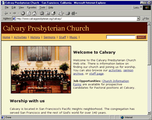
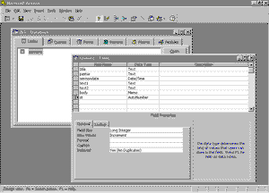
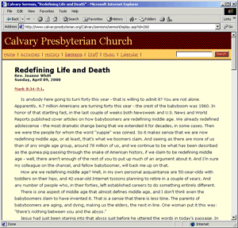
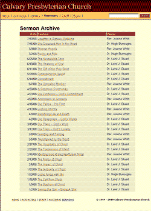

Object Oriented Publishing
Note: This tutorial on developing dynamic, database-driven Web sites was excerpted from the book, "The Art & Science of Web Design" by Jeffrey Veen.
I was reading one of those professional reports the other day from one of those big research companies. The subject at hand was content management; specifically, how large companies were dealing with the incredible flow of stuff that needs to be posted to their Web sites. One interview with a product manager at a large site struck me with the fact that they currently had over 100 million pages online, and were anticipating their growth rate doubling this year.
“Good Lord,” I thought, “that must be a nightmare to manage.” And, in fact, it is. The report goes on to talk about multi-million dollar publishing systems, with artificial intelligence-based metadata systems and other strange sounding systems. It was enough to make my head spin.
Thankfully, most of us don’t have page counts on our sites with seven figures. But that doesn’t mean we’re not facing similar struggles. Specifically, how can your site simultaneously grow and stay up to date? How do to you manage the flow of content through your site while developing new features, or redesigning the existing ones? It’s a challenge anyone with a site will eventually face.
Through the following pages, I’ll show you a process by which anyone can convert an existing site made up of static html pages into a dynamic, database-driven site. We’ll look at how to uncover the structure of your content, how to strip that content naked and then push it through templates, and finally how this process is fundamentally changing how we design Web sites.
And remember: size doesn’t matter. These principles apply to sites that have 100 pages to sites that have a million. In fact, the example we’ll use is a site for a small, non-profit organization.
So let’s roll up our sleeves and get to it.
Getting Started
I've spoken to a number of Web designers on all sorts of Web sites, and I've heard a common theme to many of their complaints. They talk about working with publishing systems or template languages in their organizations, but they feel completely cut off from how they work. "Oh, I can't change that part of my site," they say. "The programmers take care of that."
If there is one important thing you should take away from this discussion, it is that anyone -- anyone -- can participate in the development of dynamic Web sites. The distinction between "design" and "programming" – or the even more disturbing nomenclature of "technical" and "creative" -- is artificial. They are as intertwined as the art and science of Web design itself.
I call this process Object Oriented Publishing. Dynamic Web sites are built using relatively simple scripting languages. Even if you have never attempted to write a line of code, you can see results almost instantly. We not talking about compiling code or using debuggers.
For this reason, we're going deconstruct an Object Oriented Publishing system behind a relatively simple site. I could have chosen a large scale commercial content site, or an ecommerce powerhouse with a triple-digit stock price. Instead, we're going to look at a small site from a Presbyterian church in San Francisco, California. This site faces the same problems as many others – with limited staff and resources, how can this organization maintain a Web presence that can expand quickly yet still maintain a professional and organized look?

A simple Web site for a church in San Francisco.
Yet it uses the same publishing techniques as
some of the largest sites on the Web.
{kind=link}
The site is not terribly complex, yet there are a number of pages that need to be maintained by a staff unfamiliar with the peculiarities of building Web sites. To accommodate the desire for an organized look and feel, the site was developed using a series of scripts that run on the site's Web server. This ensures consistency across the many pages of the site, while freeing the church's staff to focus on developing the content.
One of the goals of this Web site was to act as a repository for the sermons delivered during weekly worship services. Adding a page or two a week to a simple Web site may not seem like a very time consuming task, but there are quite a number of fairly technical steps involved – converting the Microsoft Word file of the sermon to HTML, ensuring proper navigation and branding exist on each page, transferring the file to the right place on the Web server, etc. In fact, the church was facing the very publishing problems we faced at Wired Magazine years ago – the same problems shared by most any Web site wishing to update with any regularity.
Looking at how the church solved this problem is an excellent primer to Object Oriented Publishing. We'll start with an introduction to the entire process, then drill down into each part, using the church's sermon archive as an example. In the end, it should be clear just how easy it can be to get started with a system like this, and what the implications are for good Web design.
To start, we need an understanding of the process. Below, I've outlined the basic steps to creating a Object Oriented Publishing system.
- Strip your content of all formatting.
- Figure out what the pieces are.
- Store those pieces in a database (or something similar).
- Design some templates.
- Wire it all together.
We're going to follow these steps as we develop a basic publishing system for Calvary Presbyterian Church's Web site. In the end, we should have a virtually maintenance free site that can be updated by someone with even the most basic computer skills.
Naked Words
Before we can even think about what the pages are going to look like, we need to understand exactly what the content is. In the case of the sermons, the structure of each piece of content (or the schema to use database jargon) is pretty well defined. Each sermon was sent to the site's manager as a Microsoft Word file with the following information:
- Title: What the sermon was called. Essentially a headline.
- Pastor: Who wrote and delivered the sermon.
- SermonDate: When the sermon was delivered
- Text1: A passage from the Bible that accompanied the sermon. Not the actual text, but a pointer consisting of book, chapter, and verse.
- Text2: Often, there would be a second passage.
- Body: The paragraphs of content.
The process of identifying and labeling each component of a story is critical to the eventual success of a system like this. In time, we'll be using these little pieces of each sermon to design templates and create navigation. Think about the pages on your Web site and how the content could be broken up into little pieces. For example, if your responsible for job postings on a corporate site, you might develop a schema like this:
- Job Title
- Department
- Description
- Open Date
- Requirements
- Salary Range
- Contact
Or, if you're developing an ecommerce site, each product page might have a schema like this:
- Item Name
- Description
- List Price
- Price
- SKU#
- Shipping Options
- Current Stock
You get the idea. This is simply a process of defining the content you'll be using at as fine a grain as possible. I suggest being as explicit as possible. Write down all the pieces just like I did above. Think about all the possibilities for the content. In the first example, could a sermon ever possibly have more than two Biblical passages associated with it? If so, I'd need to make a note of that now. Describe each one as clearly as possible, including what type of data it is: Date? Number? Text?
Thinking About Architecture
It's time to do some technical work now. We're going to take the schema we just documented and create a database to hold the content. But before we do that, it pays to take a quick overview of how systems like this really work.
You may have heard the term "three-tiered architecture" thrown around in the past. This is simply more jargon for an overall structure of system design. When applied to the type of system we're developing here, a three-tiered architecture means something fairly specific: it refers to the basic components of an Object Oriented Publishing system. Here are the three tiers:
- Backend Database: This is where the content is stored. Some popular databases include Microsoft SQL Server, Oracle, Sybase, and the open source MySQL.
- Middleware: A server-based application that processes requests for pages and provides a scripting language for writing templates. Some popular middleware packages include Microsoft Active Server Pages (ASP), Allaire's Cold Fusion, and the open source PHP, We'll talk more about these a bit later.
- Interface: This refers to the HTML code that gets sent to your users' browsers.
I'm writing this on a relatively standard laptop running the Windows 98 operating system. Also running on this machine is Microsoft's Personal Web Server (which includes the ability to process ASP templates) and the Access database software that ships with Microsoft Office.
Rember, I'm advocating an entry-level sort of site building here. I want you to experiement with the tools you have on hand and not get caught up in religious wars over operating systems, web servers, and scripting languages. But let me also reiterate that nobody in their right mind would use Microsoft's Personal Web server and the Access database on a site with any amount of traffic. Rather, you'd use a true network server, like Microsoft's Internet Information Server 5.0 running on Windows 2000 with an Oracle database or the like. Open Source fans would find the equivilent in the Appache Web server on Linux with the MySQL database. Ultimately, the process for choosing the right pieces is complicated and specific to every Web site. It's the reason why we pay our Chief Technology Officers so much. (In fact, take a look at this sidebar for a quick comparison of a few of these scripting languages.)
Just remember: Anyone can experiment with dynamic publishing. This isn't just the domain of engineers, database administrators, or any other IT professional. Getting started is simple. The principles and techniques are easy to understand. You can install the tools on your personal computer and appreciate how it works from the inside. It will make you a better designer.
Seting Up Databases and Servers
Let's get started building the system. Since I have the schema for the sermon defined and documented, I can now create a database that will mimic it. That way, I'll be able to store all of this content in a well-structured place and know exactly what to ask for when I want to get it out again. Since I put the effort into the schema, this will be a relatively painless process. I start Access and create a new database, then add a new table (if you'd like some definitions, I've included a glossary of Database Vocabulary).
Now, I simply add fields to the table in my database. Like I said, this is pretty easy, since I documented my schema first. I add each one and give it the appropriate properties. One important note: I've added an additional field labeled 'sermonid', given it a type of 'AutoNumber', and made it the table's Primary Key. This all means that each sermon in the sermons table will get a unique number assigned to it when the content gets added. That way, when I start to put templates and pages together later, I'll be able to ask for specific sermons by an ID number that gets automatically assigned by the database.

Adding fields to an Access database.
{kind=link}
Next, I can start adding some content. It's very important to strip any and all formatting from the text at this point. All I want in my database is plain text – not Microsoft Word formatting, no HTML tags – nothing. All the presentation information will be applied through a template a bit later. For now, I want the content to live in on my database in as pure a form as possible.
In the case of the staff at the church, they simply copy and paste the content from a Word document into the appropraite fields in the database. No need for them to worry about HTML or any other sort of formatting. They're using the tools they're comfortable with.
As I mentioned earlier, I happen to be running Windows 98. On the CD-ROM that came with my system I found the installation option for Microsoft's Personal Web Server. I installed it on my machine and can now serve Web pages to the rest of the world, but more importantly, I can write pages embedded with scripts intended to be run on a Web server.
{kind=link}
Once the server is installed, using it is a matter of point and click. I need to tell the server where to look for my pages, and I need to configure it to know about my database. Both of these processes are described in more detail in this article.
Once I've clicked the "Start" button in the control panel, I can start building the site.
Creating Templates
Simple pages, simple code. Let's add a bit more complexity to this project. At this point, I've copied and pasted about a dozen sermons from their Word files into the Access database. Now, I can create a template that grabs the content out of the database, wraps it in my interface and design, and sends it off to my users' browsers.

By creating a template, we can pull content
out of the database and display it on a Web page.
{kind=link}
I start the template just like I did the previous pages: by including my standard header. These pages need to look like every other page on the site. But that's where the similarity stops. These pages are different because they really don't exist. What I mean is that I'm actually going to be creating what appears to my users to be dozens of new pages, but will actually be just one template pulling content from the database I created earlier. I'll explain this more by example.
First off, we need to open a connection to the database and ask for some content. Each middleware package has it's own unique way of doing this. In fact, Microsoft's ASP technology has a number of different ways to accomplish this. Again, it's important to remember here that the syntax for what we're doing is almost irrelevant. What matters most is the overall architecture of this system. I'm going to create something called a Server Object that will let me to the Access database of sermons, then allow me to build a page with the results.
<OBJECT RUNAT=Server ID=Conn PROGID="ADODB.Connection"></OBJECT> <% Conn.Open "Calvary Set RS = Conn.Execute(SELECT * FROM sermons WHERE sermonid= 1 %>
The first line simply tells the server to open a connection to the database. The <OBJECT> tag is similar to the one you may have used to include video or Flash in your Web pages. The exception here is the "RUNAT=Server" attribute which, as you would expect, creates the object on the Web server rather than in the browser. The next couple of lines start the communication process with the database. "Conn.Open" tells Access that we're after the "Calvary" database, where the sermons are stored. The next line fills a variable with the results of our first query. In this case, we're sending some SQL commands to the database, asking for the following, "In the Calvary database, please find [SELECT] all the fields [*] from the first row [sermonid=1] in the specified table [sermons]."
Now I've got a variable ("RS") full of the content I originally pasted from my Word file into the database. The rest of the template consists of my HTML with variables where the content should be. So let's get some of this content onto the page.
<h1 class="title"><%= RS("title") %></h1>
Since the top of the page is already taken care of by using our included header fragment, I can move directly into the guts of the page. Here, I've added a headline (<h1>) and then printed the "title" that came from the database. Now, when the server processes this page, it will substitute the variable with whatever is in the database field "title" in the row starting with "sermonid=1". Notice how this variable maps exactly to the fields I added when I created the Access database, which in turn map to the schema I developed at the very beginning. In fact, using ASP, my whole schema is available to me:
<%= RS("title") %>
<%= RS("pastor") %>
<%= RS("sermondate") %>
<%= RS("text1") %>
<%= RS("text2") %>
<%= RS("body") %>
So the rest of the page is easy:
<div class="pastor"><% = RS("pastor") %></div>
<div class="sermondate"><% = RS("sermondate") %></div>
<div class="text1"><%= RS("text1")%></div>
<div class="text2"><%= RS("text2")%></div>
<div class="body"><%= RS("body")%></div>
This code is optimized for a browser that supports Cascading Stylesheets. Each of these variables could have been surrounded by a <TABLE> and numerous <FONT> tags. And, since I'm using a dynamic publishing system, I could very well create separate versions of this code for separate browser versions and simply serve the appropriate one. But I wanted to show here the connection between my original architecture, the database structure, my template code, and the interface code. Notice how well all of the different pieces tie together. Just as the variable names match the database fields, the class names that reference CSS declarations match as well. Since I was very specific in how my content was structured at the instigation of the process, the whole system can grow from a solid foundation. Good design doesn't start with page layout. Good design starts at the beginning.
I'm not quite finished with the template, however. Since I have a complete scripting language at my command, I can manipulate a few things to get them exactly the way I want them. For example, the date coming out of the database isn't terribly attractive as "11/16/2000". A bit of code fixes that:
newdate = FormatDateTime(RS("sermondate"), vbLongDate)
which takes the date from the database and passes it to a built-in function called "FormatDateTime" which does exactly what you'd think it does. In this case, I've asked it to set the date in one of the predefined formats: vbLongDate gives me "November 16, 2000".
I need to do a similar transformation on the "body" content, since it lives in the database without any tags at all. Since each paragraph in the "body" has line breaks between them, I can replace (using another eponymous built-in function) them with <P> tags to show the paragraphs in the browser:
replace(RS("body"), vbcr, "<p>")
And on and on. I can change anything I like, or use logic (if…then…else statements) to make my template even smarter. For example, if one the particular sermon only has one Biblical passage associated with it, then we only need to show one in our template. We can check and see if anything is in the "text2" variable, and only show the surrounding HTML if something is in there:
<%if RS("text2") = "" then %>
<!-- No code here -->
<% else %>
<div class="text2"><%= RS("text2")%></div>
<% end if %>
Designing With Code
The example so far only does one thing: it pulls one pre-specified story from the database and runs it through a formatting template. What about all the other sermons? How will I get them out of the database?
First, I need to add a way to reuse my template over and over again for each sermon in the database. Remember that SQL command I used to ask the database for the content?
"SELECT * FROM sermons WHERE sermonid= 1"
I need to replace that "sermonid=1" with a way to say, in essence, "sermonid can equal anything". For this, I'll use the URL, or, more specifically, the query string part of the URL.
http://www.calvarypresbyterian.org/sermonDisplay.asp?showsermon=1
You may have seen URLs like this before. They point to a server and a specific page, but then follow that with a question mark and one or more variables with values. Everything following the question mark is called the query string. Here, I've created a URL that sets a variable named "showsermon" to the value of "1". Now in my template, I can ask the server to put whatever it finds in the query string into a variable I can use on my page:
showsermon = Request.QueryString("showsermon")
Now my template has a variable named "showsermon" with a value of "1". Next, I use it in my SQL statement:
"SELECT * FROM sermons WHERE sermonid=" & showsermon
And from there, I can change the number in the URL and automatically show the corresponding sermon from the database. So if I send a user to:
http://www.calvarypresbyterian.org/sermonDisplay.asp?showsermon=2
They'll see a nicely formatted page with the second sermon in the database. And:
http://www.calvarypresbyterian.org/sermonDisplay.asp?showsermon=3
will show them the third. One important note: In this example, there are only three sermons in the database. If a user were to change the number in the URL above to a 4 or higher, bad things would happen – most notably they would get an ugly error. Well-written, robust code should always include routines that handle errors like this, but I'm leaving them out for the sake of clarity in this system.
Let's see what I've got so far now:
<OBJECT RUNAT=Server ID=Conn PROGID="ADODB.Connection"></OBJECT>
<%
showsermon = Request.QueryString("showsermon")
Conn.Open "Calvary"
Set RS = Conn.Execute(SELECT * FROM sermons WHERE sermonid=" & showsermon)
%>
<!--#include virtual="/includes/header.inc" -->
<h1 class="title"><%= RS("title") %></h1>
<div class="pastor"><%= RS("pastor") %></div>
<div class="sermondate"><%= FormatDateTime(RS("sermondate"), vbLongDate)</div>
<div class="text1"><%= RS("text1")%></div>
<%if RS("text2") = "" then %>
<!-- No code here… -->
<% else %>
<div class="text2"><%= RS("text2")%></div>
<% end if %>
<div class="body"> replace(RS("body"), vbcr, "<p>")</div>
<%
RS.Close
Conn.Close
%>
<!--#include virtual="/includes/footer.inc" -->
Reviewing my template, I find the following to be happening: I'm instantiating an object on the server that lets me talk to a database named "Calvary". Once I open the connection, I ask for all the fields in the table "sermons" from the row which has a "sermonid = 1". Then I start putting things on the page. I start with my page header, which I include from a fragment file. Then comes the headline, pastor's name, and sermon date – which I've reformatted to my liking. After that, I put down the first passage, then check and see if there is a second. If not, I show nothing, else I print the code. Then, I add <P> tags to the body and show that as well. I send two commands to the object that talks to the database, telling it to close the connection. Finally, I include a second fragment – the page footer with copyright and other information – at the end of the template.
That's it. That's how easy it is to start building a basic database publishing system.
Building an Index
If I were creating this project out of static HTML, I'd now have to take all the sermon pages and copy and paste relevant information out of them and into an index page. I'd probably want to show the date, the title, and the author of each one. I'd also need to include the URL in an <A HREF> tag to provide pointer. The end result would look something like the screenshot on this page.

A list of all the pages available,
organized as a navigable index.
{kind=link}
But this isn't a static HTML project. All that information is sitting in the database waiting to be used. Or, in this case, reused.
I start with a very similar template as before. I open the database connection and send some SQL asking for the appropriate content. Then I include the page header and display the results. Only this time, the SQL is different:
Set RS = Conn.Execute("SELECT sermonID, title, pastor, sermonDate FROM sermons ORDER BY sermonDate DESC")
You can see that I'm no longer asking the database for every field. In my last SQL statement, I told it to "SELECT *", which means, "All Fields". Now, however, I'm asking for specific fields: sermonid, title, pastor, and sermonDate; still from the table "sermons". I could ask for them all, but since I have no intention of using the "body" field, and since it's such a large field, my page will perform faster by being more specific. There is one other difference between this SQL statement and the previous is the "ORDER BY" command. This takes the results of my query, which will come out of the database in no particular order, and rank all the rows by date. The "DESC" means descending. I could have otherwise specified "ASC" to reverse the order.
The "RS" variable now has a lot of stuff in it. It's holding all the IDs, titles, pastor names, and dates of each sermon in the database. My template needs to arrange this data into a nice interface for my users. To do this, I'll put everything in a table, starting with some headers for each column:
<TABLE BORDER=0>
<tr>
<th>Date</th>
<th>Sermon</th>
<th>Pastor</th>
</tr>
Then I'll start a loop that runs through all the results I got back from my query, printing each variable as it comes to it:
<% Do While Not RS.EOF %>
<tr>
<td class="sermondate">
<%= RS("sermondate") %>
</td>
<td class="title">
<a href="/Calvary/sermons/sermonDisplay.asp?id=<%= RS("sermonID") %>"><%= RS("title") %></a>
</td>
<td class="pastor">
<%= RS("pastor") %></td>
</tr>
<%
RS.MoveNext
Loop
%>
There are some interesting things going on here. First, I add a line of code that tells the template to loop through all the results until it runs out of results, or "While not RS.EOF" (which stands for the "end of file"). At the end of the block of code, I tell it to move to the next set of results ("RS.MoveNext") and the "Loop". This will create row after row of a table, but since I put this loop below the first <TR>, only one header.
I'm still using the same class names for my CSS as before, carefully matching them to the variable names to keep everything clear. Each cell in the table now contains the replaced value of each variable. The result is a well formatted table of contents to all the sermons in the database.
One final note of interest here. In the second cell of the table, I'm displaying the title of the sermon. I'm also using that page element as the navigational link to the actual sermon. To do this, I've included part of the URL in the <A HREF> tag, and used the "sermonid" variable from the database to generate the rest of the address. As the template loops through all the results of the query, the URLs automatically are assembled to point to the correct sermon in the database:
<a href="/Calvary/sermons/sermonDisplay.asp?id=<%=RS("sermonID") %>">
The system is essentially complete. All the sermon pages are identically formatted, creating a clean and consistent interface to an ever-growing archive of content. That archive is accessible through a nearly automatic index pulled from the same reusable fields of the database I used for displaying the sermons. Maintenance is a breeze. Want to change the design? A quick template edit updates the hundreds of existing pages on the site. Find an error? Change it in the database and it updates wherever it appears – on a sermon page, in the index, on the search results page.
Eternally Fresh
The sermon archive on this site spans five years worth of content. But now, the content of each page – regardless of age – can be redesigned or embellished with an up-to-the-minute accurate feature. It is as if I was updating every single page in the archive every time someone adds a new sermon to the database. Of course, you could do something like this by hand, but the labor would be prohibitive. You would literally spend all your time maintaining your site, at the expense of creating new content and features.
Systems like this also have an interesting historical effect on the pages they contain. If I decided to, say, change the background color of every page, or use advanced scripting for a feature, or whatever, I would be changing every page. The implication, then, is that the pages will cease to reflect the visual design and technological advances of the era in which they were created. For example, when I was studying history in college, I would scour editions of Life Magazine dating from the late 1800s while doing research. Much of the value of these sources was not only in the content of the articles, but the context in which they were displayed. Advertisements of the day, typography from the last century and other tidbits would add to the overall impression of the time in which the article existed. Will we lose this value on the Web? Pages created just five years ago already fail to render in today's browsers as old HTML elements become deprecated in new standards. The advent of Object Oriented Publishing takes this even farther, separating not only content from it's presentation, but it's historical context as well. It's a tenuous balance between the efficiency of dynamic publishing and the value of learning from our past mistakes and achievements.
And not everybody thinks database-driven template design is really design. Some designers I've spoken with find it insulting to think that each and every story in a Web site should be absolutely identical. Content, the argue, should be designed based on what it says and what it means. Visual design communicates as well as the words, they would argue. And I would agree, but there is a reality on the Web that forces a compromise.
First, design can and should conform to content, but tools are tools. Users learn how interfaces work, and expect those interfaces to work the same time after time. Developing custom design treatments for story after story on a Web site can lead to a disorientation as users are forced to pick out the particular useful bits of an interface over and over again as they move through a site.
But more importantly, a dynamic publishing system can give commercial Web sites
an edge to survival. The Web is still young, and business models are evolving
as quickly as the technology behind today's Web sites. Yet despite the surge
in "dot com" stock prices and seemingly endless venture capital being
invested in startups, the fact remains that it can be very difficult to provide
free content supported with advertising. The cost of advertising on a Web site
is significantly less than what it costs to run ads in printed publications
or on television- two other forms of media that are typical free to end users,
with costs being offset by messages from sponsors. Ultimately, successful business
models will emerge from the chaos that is today's adolescent Web. But today,
commercial sites need every edge they can muster.
So go forth and experiement. There's an Object Orient Web site in your future.